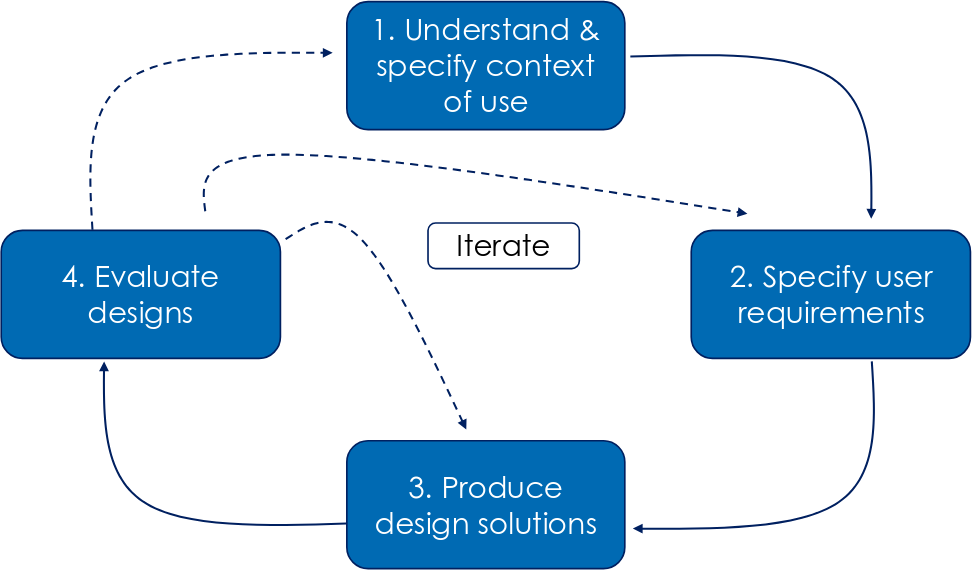
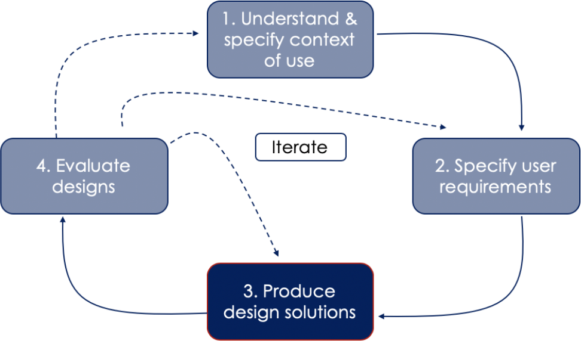
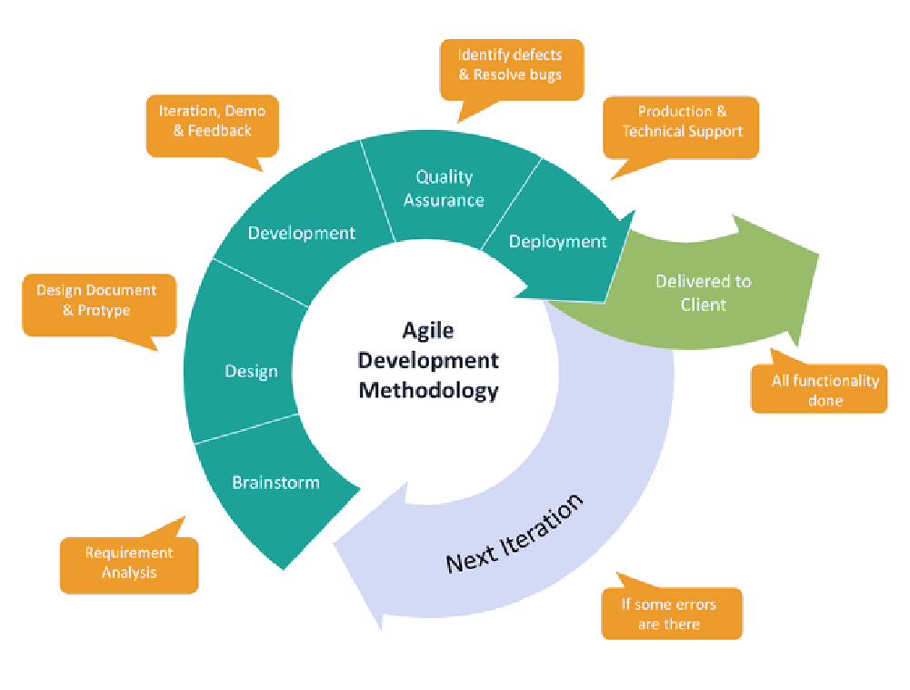
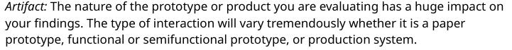

Prototyping
Presentation:
User Experience (UX) Design and Management
- Used extensively
- Part of most previously discussed design paradigms

UCD (User-Centered Design)

Phase 3/4 in the UCD process
 Phase 4/4 in the UCD process
Phase 4/4 in the UCD process
 Design Thinking
Design Thinking
Design Thinking

Prototypes come in different forms:
 ,
,
 ,
,
 ...
...
,
,
...
functional prototype:
Shows function, appearance / not final scale, manufacturability, ...
paper prototype:
Early UI testing on paper.
Confirm and communicate design ideas
visual prototype:
Shows size, appearance
special case:
form study prototype:
Emphasizes geometry & less color/material
Prototypes come in different forms:
,
,
...
,
,
...

— Tullis und Albert - Seite 128
(Über die Verzerrung von Ergebnissen durch Artefakte)
visualize your big thoughts
and tiny ideas
by positioning, rotating and scaling them on an infinite canvas
the only limit is your imagination
want to know more?
use the source, Luke!
one more thing...
have you noticed it’s in 3D*?
* beat that, prezi ;)